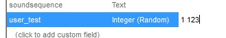

Byte Angle
Allows to easily set a byte angle.
Integer (random)
Randomly picks an integer value between provided minimum and maximum value. To use it, change the UDMF field type to "Integer (Random)" and enter a value as 'min max'.
Technical notice: this field type is considered "virtual", because it cannot be saved in a map, so it will be converted to "Integer" type after clicking OK in an Edit form.
Example:
Here, the field 'user_test' will be added to all selected map elements, and in all of them this field will have a random value from 1 to 123:

Decimal (random)
Same as "Integer (Random)", but for decimal values.